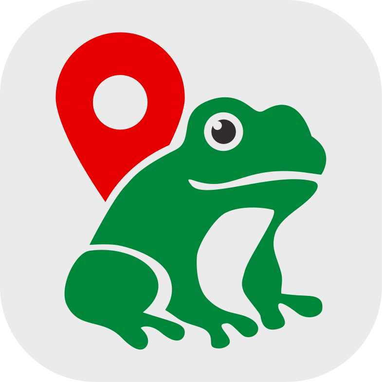
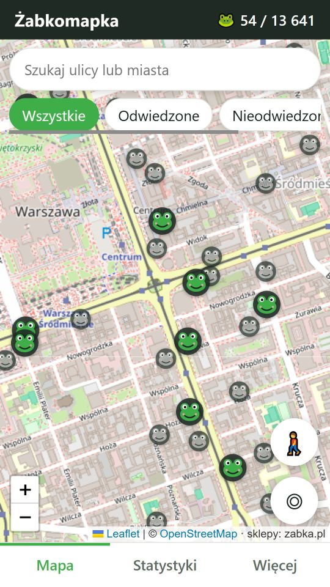
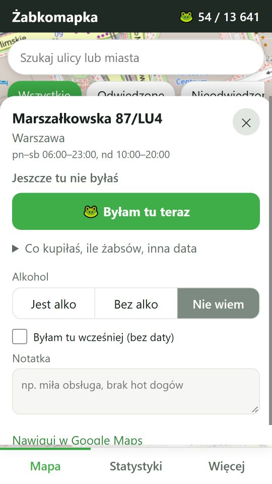
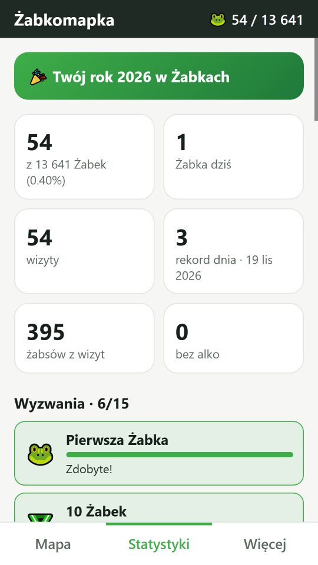
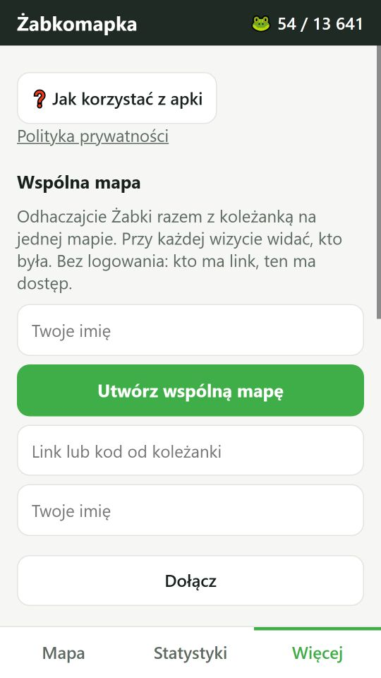

Darmowa apka · web i Android

ŻabkomapkaOdhaczaj Żabki, w których byłaś. Wszystkie ponad 13 600 sklepów w Polsce są na jednej mapie. Przy każdej wizycie zapiszesz datę, zakupy i żabsy.
Działa w przeglądarce na telefonie i komputerze, bez konta i bez logowania. APK na Androida to wersja 0.5.1 (4 MB). Przy instalacji telefon poprosi o zgodę na instalowanie aplikacji z tego źródła. Wkrótce też w Google Play.

Co potrafi
Prosty dziennik Żabek dla tych, które chcą zaliczyć wszystkie.
🐸 Mapa wszystkich Żabek
Ponad 13 600 sklepów z adresami i godzinami otwarcia. Od razu widać, które już odwiedziłaś, a które czekają.
✅ Odhaczanie wizyt
Jedno kliknięcie „Byłam tu teraz”. Możesz dopisać zakupy, żabsy, alkohol, notatkę albo starszą wizytę z inną datą.
🚶 Spacery z GPS
Zapisuje trasę i dystans, także przy zgaszonym ekranie na Androidzie. Może przypomnieć o Żabce, w której jeszcze nie byłaś.
🏙️ Dzielnice Warszawy
Każda z 18 dzielnic zielenieje razem z postępem. Cała zaliczona dzielnica daje odznakę, np. „Wola zaliczona”.
🏆 Wyzwania i statystyki
Na przykład 10 Żabek w jeden dzień albo Żabki w 5 miastach. Do tego wizyty dzień po dniu, ulubione sklepy i podsumowanie roku.
👯 Wspólna mapa
Wyślij link przyjaciółce i odhaczajcie razem. Przy każdej wizycie widać, kto ją zapisał. Nie trzeba zakładać konta.
Jak to wygląda



Zacznij odhaczać
Bez konta i bez reklam. Wizyty i trasy zostają na Twoim telefonie. Na serwer trafiają tylko wizyty ze wspólnej mapy i Twoja lokalizacja, jeśli sama ją udostępnisz. Apka jest nieoficjalna i nie jest związana z Żabka Polska.